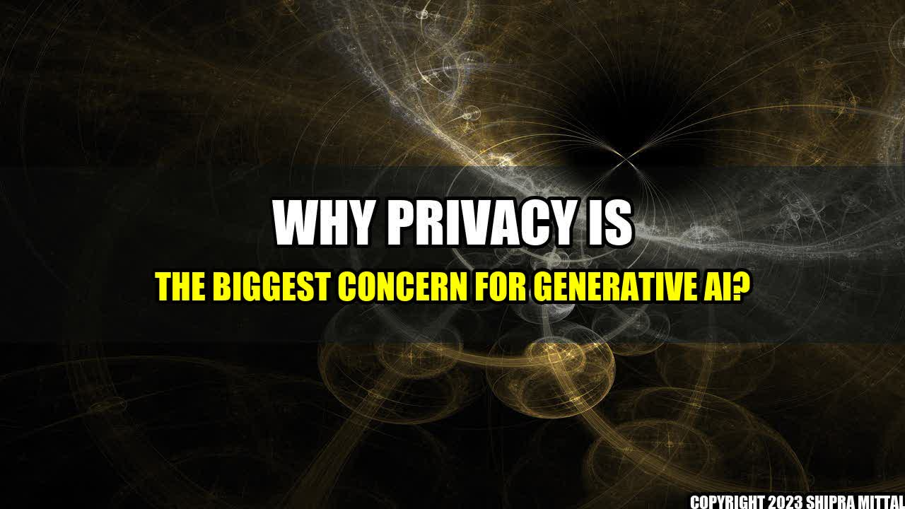

Why Privacy is the Biggest Concern for Generative AI?

Amy was excited to experience the power of generative AI. She had downloaded the latest version of a chatbot app on her phone, which promised to provide her with the most intelligent and natural conversation. As she started talking to the bot, she realized how cleverly it was responding to her queries, making her believe that she was talking to a real person. However, when she went to bed that night, she realized that the app had logged all her conversations, including personal details and private information.
Generative AI is rapidly evolving, and we are using it in various forms, from chatbots to virtual assistants, game characters, speech recognition, and more. It is a technology that can create human-like responses and generate new data based on patterns and algorithms. However, with the growth of this technology, privacy has become a crucial concern, and it is essential to understand its impact on our lives.
Concrete Examples:
- Smart speakers like Amazon Echo and Google Home record and store all conversations, including sensitive and personal ones, even though they claim not to.
- The use of facial recognition technology in public places without the consent of individuals is a potential breach of privacy that is already happening in several countries.
- AI-powered chatbots and virtual assistants collect personal information such as first and last name, email address, phone number, and more. It can lead to data breaches, hacking, and identity theft if not securely stored and managed.
- AI can generate images, text, audio, and video that are indistinguishable from real ones, leading to an increase in deepfakes, fraudulent and misleading content, which can negatively impact individuals, organizations, and society as a whole.
Conclusion:
Generative AI has a significant impact on our lives, and it has the potential to shape our future. However, the responsible use of AI is crucial, and privacy should be the topmost concern. Here are three key takeaways:
- Understand the data collection, storage, and management policies of AI-powered devices, apps, and services before using or purchasing them.
- Regulations and policies should be in place to ensure the ethical and secure use of AI and protect privacy rights.
- Human oversight and accountability should be incorporated into AI systems to ensure transparency and prevent potential misuse of the technology.
References:
Further Readings and Hashtags:
Akash Mittal Tech Article
Share on Twitter Share on LinkedIn